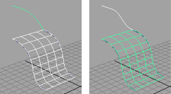
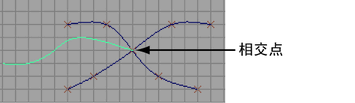
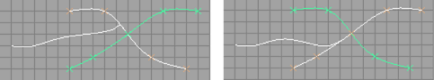
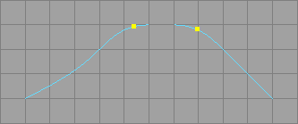

让曲线与曲面相切或实现曲率连续性
- 先选择曲面，然后选择曲线。
- 选择“曲线 > 投影切线”(Curves > Project Tangent) >
 。
。
- 将“构建”(Construction)设定为“切线”(Tangent)或“曲率”(Curvature)。
- 单击“投影”(Project)。

选择投影切线节点并单击“显示操纵器工具”(Show Manipulator tool)，以操纵曲率比例、切线比例或切线旋转。
让曲线与曲线交点相切或实现曲率连续性
- 选择“曲线 > 投影切线”(Curves > Project Tangent) > 。
- 在与曲面相交的一端附近，单击要修改的曲线或曲面边。
- 单击两条相交曲线定义一个平面。
让一条曲线与另一条曲线相切或实现曲率连续性
- 确保要相切的曲线的端点与定义平面的曲线相交。

- 先选择要重新定形的曲线，然后选择其他曲线。
投影切线以关键曲线（最后选择的曲线，以绿色亮显）为基础。
- 选择“曲线 > 投影切线”(Curves > Project Tangent) > 。
- 将“构建”(Construction)设定为“切线”(Tangent)或“曲率”(Curvature)。
- 单击“投影”(Project)。

编辑投影切线操作
- 选择投影切线节点并单击“显示操纵器工具”(Show Manipulator tool)，以操纵曲率比例、切线比例或切线旋转。
对齐两条曲线的末端
- 选择要对齐曲线的曲线（或等参线）上的点。

- 选择。
提示： 如果构建历史处于启用状态，则可选择对齐节点，并使用“显示操纵器工具”(Show Manipulator tool)编辑切线比例和曲线点。
如果要在曲线的两端同时投影切线，则可能需要向曲线添加更多编辑点。原因在于，为了保持连续性，投影切线操作“占用”了曲线末端的几个 CV。必须具有足够的内部 CV 才能避免重叠。